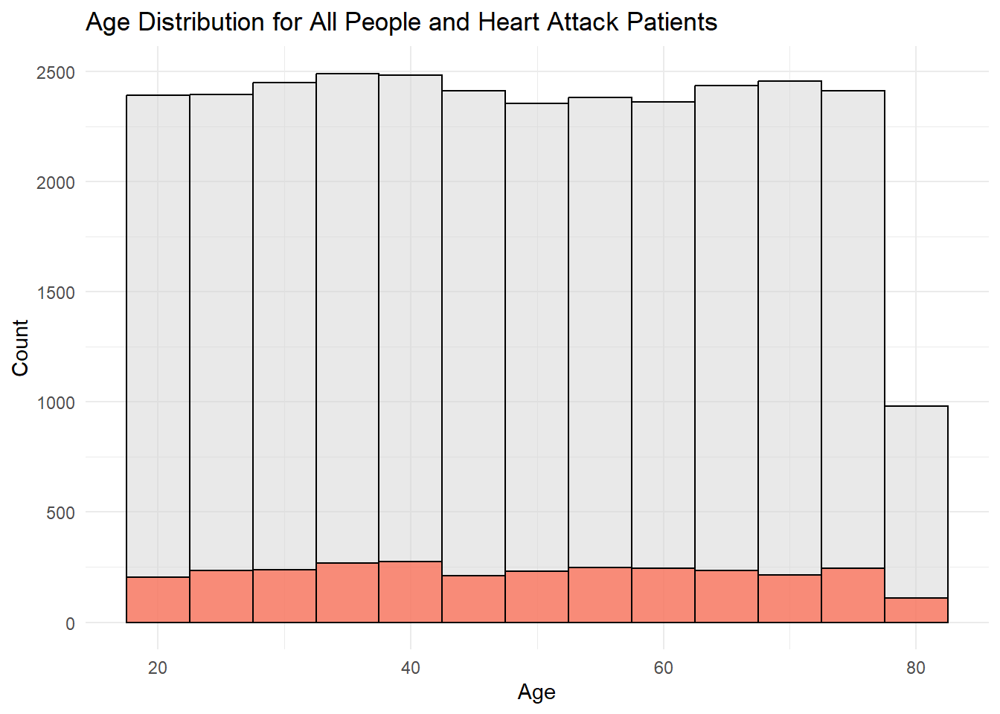
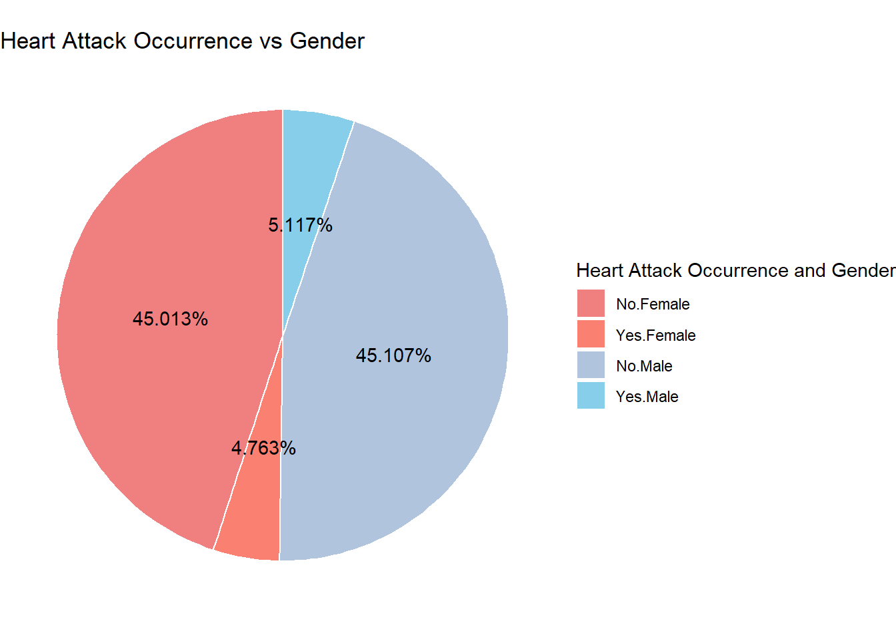
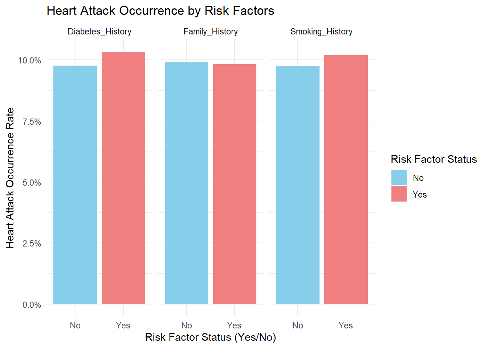
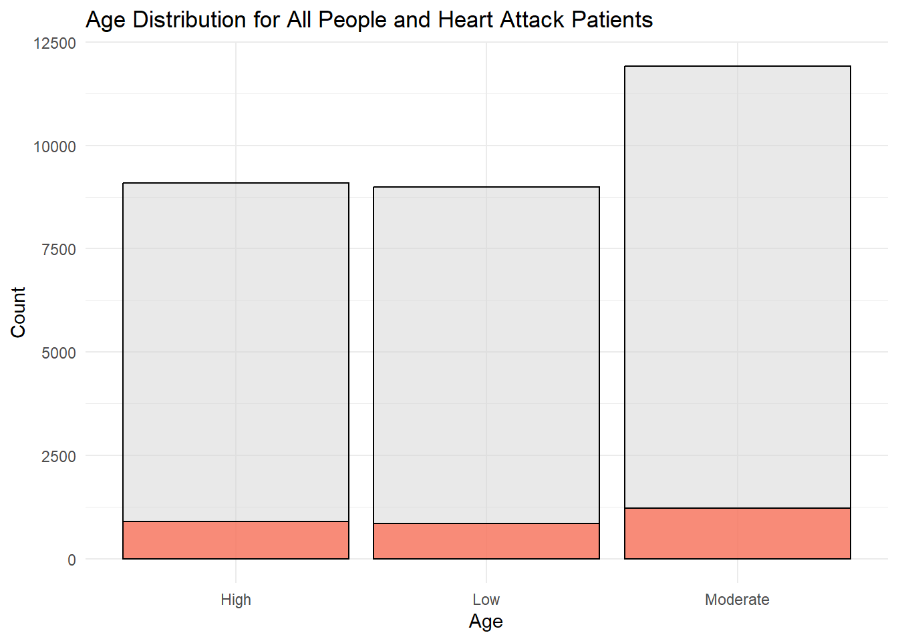
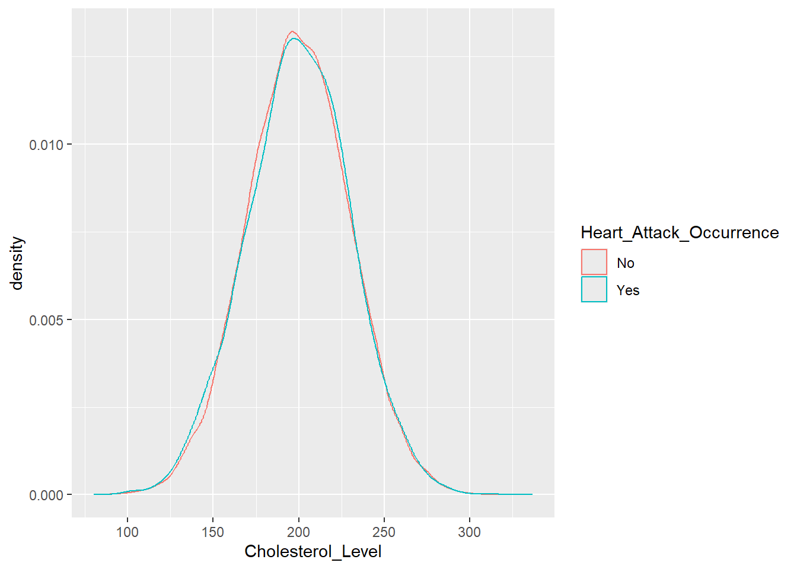
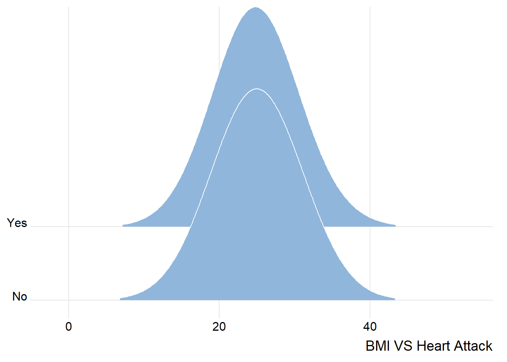
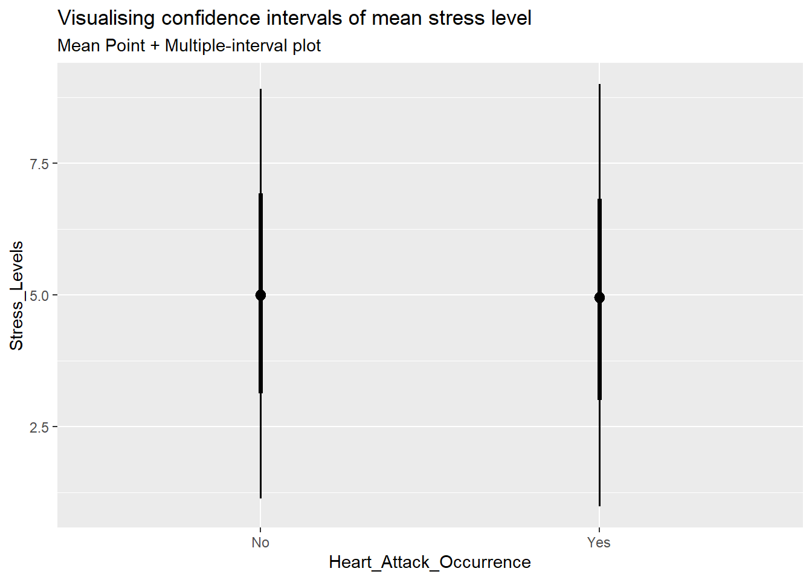

pacman::p_load(ggplot2, dplyr, scales, tidyverse, ggridges, colorspace, plotly, crosstalk, DT, ggdist, gganimate) Take-home exercise 1
A Study of Data On the Heart Disease in Japanese citizens
1 Introduction
1.1 Background
With the rising prevalence of cardiovascular diseases worldwide, public attention to these conditions has also increased. Therefore, using data to identify risk factors for heart disease is crucial. This dataset focuses on Japanese citizens, recording their health status, risk factors, and personal conditions to explore potential insights within the data.
1.2 Objective
This take-home exercise aims to apply appropriate Exploratory Data Analysis (EDA) methods and ggplot2 functions to analyze the data. Based on the analysis and observations, it also briefly suggests potential insights for future research to help policymakers improve public healthcare.
2 Data prepare
2.1 Install and launch R packages
| Package | function |
|---|---|
| ggplot2 | For data visualization, creating high-quality charts. |
| dplyr | For data manipulation, providing efficient filtering, transformation, and summarization functions. |
| scales | For adjusting scales, axes, and formatting in ggplot2 charts. |
| tidyverse | A collection of data science packages, for data processing and visualization. |
| ggridges | For creating ridge plots, useful for visualizing density distributions. |
| colorspace | For advanced color management, including color transformations and palette selection. |
| plotly | For creating interactive charts, including 3D and dynamic visualizations. |
| crosstalk | For enabling interactive data sharing between different HTML widgets (e.g., plotly, DT tables). |
| DT | For creating interactive HTML data tables. |
| ggdist | For statistical visualizations, such as distributions and uncertainty representations. |
| gganimate | For animating ggplot2 charts, enabling time-series or dynamic visualizations. |
2.2 Data source
The dataset comes from Kaggle, with 1 table, 32 columns, and 30,000 rows. Each row of data represents the basic physical condition of a Japanese citizen.
2.2.1 Importing Data
heart_attack_data <- read.csv("data/japan_heart_attack_dataset.csv")2.2.2 Checking for duplicates
Check the data set for duplicate data to prevent interference with subsequent analysis.
heart_attack_data[duplicated(heart_attack_data), ] [1] Age Gender Region
[4] Smoking_History Diabetes_History Hypertension_History
[7] Cholesterol_Level Physical_Activity Diet_Quality
[10] Alcohol_Consumption Stress_Levels BMI
[13] Heart_Rate Systolic_BP Diastolic_BP
[16] Family_History Heart_Attack_Occurrence Extra_Column_1
[19] Extra_Column_2 Extra_Column_3 Extra_Column_4
[22] Extra_Column_5 Extra_Column_6 Extra_Column_7
[25] Extra_Column_8 Extra_Column_9 Extra_Column_10
[28] Extra_Column_11 Extra_Column_12 Extra_Column_13
[31] Extra_Column_14 Extra_Column_15
<0 rows> (or 0-length row.names)The result shows no duplicate data.
2.2.3 Select relevant variables
According to Fabian Sanchis-Gomar. (2016). Epidemiology of coronary heart disease and acute coronary syndrome. This analysis will focus on the following factors:
| No | Name | Description | Type of Variable |
|---|---|---|---|
| 1 | Age | Age of respondents | Numerical |
| 2 | Gender | Male or Female | Categorical |
| 3 | Smoking History | Yes or No | Categorical |
| 4 | Diabetes History | Yes or No | Categorical |
| 5 | Physical Activity | Intensity level of physical activity | Numerical |
| 6 | Cholesterol_Level | Cholesterol levels of respondents | Numerical |
| 7 | Stress Level | Stress Level of respondents | Numerical |
| 8 | BMI | Weight / Height ², used to determine the weight health status of respondents | Numerical |
| 9 | Family History | Yes or No | Categorical |
| 10 | Heart Attack Occurrence | Yes or No | Categorical |
Therefore, only relevant columns are selected for analysis.
select_data <- heart_attack_data %>% select (Age, Gender, Smoking_History, Diabetes_History, Physical_Activity, Cholesterol_Level, Stress_Levels, BMI, Family_History, Heart_Attack_Occurrence )Use the code to perform checks on the newly generated dataset.
glimpse(select_data)Rows: 30,000
Columns: 10
$ Age <int> 56, 69, 46, 32, 60, 25, 78, 38, 56, 75, 36, 40…
$ Gender <chr> "Male", "Male", "Male", "Female", "Female", "F…
$ Smoking_History <chr> "Yes", "No", "Yes", "No", "No", "No", "No", "Y…
$ Diabetes_History <chr> "No", "No", "No", "No", "No", "No", "Yes", "No…
$ Physical_Activity <chr> "Moderate", "Low", "Low", "Moderate", "High", …
$ Cholesterol_Level <dbl> 186.4002, 185.1367, 210.6966, 211.1655, 223.81…
$ Stress_Levels <dbl> 3.644786, 3.384056, 3.810911, 6.014878, 6.8068…
$ BMI <dbl> 33.96135, 28.24287, 27.60121, 23.71729, 19.771…
$ Family_History <chr> "No", "Yes", "No", "No", "No", "No", "No", "No…
$ Heart_Attack_Occurrence <chr> "No", "No", "No", "No", "No", "No", "No", "No"…2.2.4 Check missing values
any(is.na(select_data))[1] FALSEThe result shows no missing values.
3 Insights
3.1 Relationship between age and heart disease
Since the number of respondents in each age group is not necessarily the same (i.e., the age distribution is not necessarily balanced), it is also necessary to consider the age distribution of the respondents.

ggplot(select_data, aes(x = Age)) +
geom_histogram(data = select_data, aes(x = Age), binwidth = 5, fill = "lightgray", color = "black", alpha = 0.5) +
geom_histogram(data = subset(select_data, Heart_Attack_Occurrence == "Yes"), aes(x = Age), binwidth = 5, fill = "tomato", color = "black", alpha = 0.7) +
labs(x = "Age", y = "Count", title = "Age Distribution for All People and Heart Attack Patients") +
theme_minimal()| Insight 1 |
|---|
| As we can see from the graph above, there is no significant relationship between whether or not a person has heart disease and their age in Japan. The distribution of the number of people with heart disease does not change significantly with age, and the number of people with heart disease is basically the same as the age distribution of the respondents. |
3.2 Relationship between gender and heart disease

library(scales)
data_summary <- select_data %>%
group_by(Heart_Attack_Occurrence, Gender) %>%
summarise(count = n()) %>%
ungroup() %>%
mutate(total_count = sum(count), percentage = count / total_count)
ggplot(data_summary, aes(x = "", y = count, fill = interaction(Heart_Attack_Occurrence, Gender))) +
geom_bar(stat = "identity", width = 1, color = "white") +
coord_polar(theta = "y") +
labs(title = "Heart Attack Occurrence vs Gender", fill = "Heart Attack Occurrence and Gender") +
theme_void() +
scale_fill_manual(values = c("lightcoral", "salmon", "lightsteelblue", "skyblue")) +
geom_text(aes(label = percent(percentage)), position = position_stack(vjust = 0.5), color = "black")| Insight 2 |
|---|
| From the above figure, we can see that the proportion of men and women with heart disease is almost the same when the ratio of men and women respondents is almost the same, so it can be seen that whether or not to suffer from heart disease has nothing to do with the gender of the patients in Japan. |
3.3 Heart Disease in relation to Diabetes, Smoking, and Family History

df_prop <- select_data %>%
pivot_longer(cols = c(Diabetes_History, Smoking_History, Family_History),
names_to = "Risk_Factor",
values_to = "Status") %>%
group_by(Risk_Factor, Status) %>%
summarise(Heart_Attack_Rate = mean(Heart_Attack_Occurrence == "Yes")) %>%
ungroup()
ggplot(df_prop, aes(x = Status, y = Heart_Attack_Rate, fill = Status)) +
geom_bar(stat = "identity", position = "dodge") +
facet_wrap(~ Risk_Factor) +
theme_minimal() +
labs(title = "Heart Attack Occurrence by Risk Factors",
x = "Risk Factor Status (Yes/No)",
y = "Heart Attack Occurrence Rate",
fill = "Risk Factor Status") +
scale_y_continuous(labels = scales::percent) + # Convert Y-axis to percentage
scale_fill_manual(values = c("No" = "skyblue", "Yes" = "lightcoral"))| Insight 3 |
|---|
| As we can see from the graph above, people with diabetes and a history of smoking are a bit more likely to get heart disease than the general population in Japan, but the overall percentage difference is not significant.. |
3.4 Physical activity and heart disease
Because the number of people at different exercise intensities is itself different, the ratio of their numbers will also be considered.

ggplot(select_data, aes(x = Physical_Activity)) +
geom_bar(data = select_data, aes(x = Physical_Activity), binwidth = 5, fill = "lightgray", color = "black", alpha = 0.5) +
geom_bar(data = subset(select_data, Heart_Attack_Occurrence == "Yes"), aes(x = Physical_Activity), binwidth = 5, fill = "tomato", color = "black", alpha = 0.7) +
labs(x = "Age", y = "Count", title = "Age Distribution for All People and Heart Attack Patients") +
theme_minimal()| Insight 4 |
|---|
| As we can see from the figure above, the proportion of people with the disease in each group of different exercise intensities is almost the same as the proportion of the overall number of people in their group, so there is no significant relationship between the two either. |
3.5 Relationship between cholesterol level and heart disease

ggplot(data=select_data,
aes(x = Cholesterol_Level,
colour = Heart_Attack_Occurrence)) +
geom_density()| Insight 5 |
|---|
| Looking at the cholesterol density graph of the respondents above, there is no significant difference between those at risk for heart disease and the healthy population. It can be seen that cholesterol levels are not a major potential cause of heart disease in Japan. |
3.6 BMI and heart disease

ggplot(select_data,
aes(x = BMI,
y = Heart_Attack_Occurrence)) +
geom_density_ridges(
scale = 3,
rel_min_height = 0.01,
bandwidth = 3.4,
fill = lighten("#7097BB", .3),
color = "white"
) +
scale_x_continuous(
name = "BMI VS Heart Attack",
expand = c(0, 0)
) +
scale_y_discrete(name = NULL, expand = expansion(add = c(0.2, 2.6))) +
theme_ridges()| Insight 6 |
|---|
| The BMI ridgeline models for the general population and the diseased population are nearly identical, and ostensibly their differences are not significant enough for a significant relationship to exist. |
3.7 Stress level and heart disease

select_data %>%
ggplot(aes(x = Heart_Attack_Occurrence,
y = Stress_Levels)) +
stat_pointinterval() +
labs(
title = "Visualising confidence intervals of mean stress level",
subtitle = "Mean Point + Multiple-interval plot")| Insight 7 |
|---|
| The confidence intervals for the stress levels of the diseased and normal populations are nearly the same, and ostensibly the differences were not significant. |
4 Summary and conclusion
According to existing studies, in general, factors such as age, blood glucose, blood pressure, etc., can be potential factors for developing heart disease, but the present dataset does not present any variables that are clearly associated with heart disease, which is a very strange matter. Based on the above results, I make the following speculation:
- The form of the dataset may be not suitable for analyzing heart disease
- The Japanese have a low incidence of cardiovascular disease worldwide, and their healthy lifestyle may make the role of these potentially heart disease-causing variables less pronounced
- Given the complexity of the causative factors of heart disease, it may not be possible to analyze the relationship of only one pair of variables to derive valid insights, so subsequent logistic regression models or decision trees may be used to further analyze the dataset and incorporate additional medical information to determine the weight of these potential causative factors.
References
https://atm.amegroups.org/article/view/10896/11530
https://www.kaggle.com/datasets/ashaychoudhary/heart-attack-in-japan-youth-vs-adult